için hazırlanmıştırTekirdağ Süleymanpaşa’daki entegre fabrikadan global satış ağına kadar uzanan operasyonda, doğrudan uygulanabilir 5 yapay zekâ projesi. Bu sayfa her birinin nasıl çalışacağını, nasıl başlayacağımızı ve sonucu nasıl ölçeceğimizi anlatır.
Kameralardan ERP’ye, teknik arşivden müşteri mesajlarına kadar farklı yerlerde duran veriler tek bir güvenli katmanda toplanır. Üstüne kurulan yapay zekâ modelleri çalışanlara ve müşterilere beş farklı yüzle ulaşır.
Her proje için ne yapıldığını, kimin nasıl kullanacağını ve örnek bir ekranı görebilirsiniz. “Tüm detayı oku” ile her projenin kendi sayfasına geçin.
Ahşap çiziğinden kumaş dikişine, kaynak hatasından cam deformasyonuna: Tekirdağ hattında her ürünü gören bir “ikinci göz”. Adı: Koleksiyon Akıllı Kalite & Kusur Tespiti.
Tüm detayı oku →50 yıllık tasarım arşivi, binlerce şartname ve kılavuz tek bir soru kutusunda. Adı: Koleksiyon Brain — yanıtı resmi doküman sayfasıyla birlikte verir.
Tüm detayı oku →Mimarın yüklediği fotoğrafa kanepe, masa, aydınlatma ve sofra grubu perspektife ve ışığa uygun biçimde yerleşir. Adı: AI Mekân Küratörü.
Tüm detayı oku →Bir WhatsApp fotoğrafı; parça tanıma, garanti kontrolü ve ERP siparişi dakikalar içinde. Adı: Akıllı Montaj & Hasar Analiz Botu.
Tüm detayı oku →Talebi önceden gören, kesim yerleşimini akıllıca yapan bir planlama modeli: stok, fire ve depolama yükü birlikte azalır. Adı: Talep ve Fire Optimizasyonu.
Tüm detayı oku →Örnek takvimdir; süreler seçilecek kapsama göre değişir. Her fazın sonunda ölçülen sonuç, bir sonraki fazın kararını verir.
| Proje | Ana göstergeler | Beklenen değer |
|---|---|---|
| 1. Fabrika & Üretim Hattı | Iskarta oranı, i̇lk geçiş verimi (fpy) | Hatalı ürünün montaj veya paketlemeye girmesini önleyerek ıskarta oranını düşürür; müşteri iadelerini ve lojistik maliyetlerini azaltır. |
| 2. Kurum İçi Teknik Asistan | Bilgi arama süresi, hatalı montaj | Bilgi arama süresini dakikalardan saniyelere indirir, tecrübe aktarımını kurumsallaştırır ve hatalı montaj riskini azaltır. |
| 3. Satış & E-Ticaret | Teklif kapanış oranı, render maliyeti | Mimari satış ve B2B kurumsal ofis teklif süreçlerinde kapanış oranını artırır; pazarlama prodüksiyon maliyetlerini %60’a varan oranda düşürmeyi hedefler. |
| 4. Lojistik & Satış Sonrası | Çözüm süresi, otomatik çözülen oran | Satış sonrası operasyon maliyetlerini düşürür; servis çözüm süresini günlerden dakikalara indirerek marka algısını güçlendirir. |
| 5. Planlama & Tedarik | Fire oranı, tahmin doğruluğu | Stok maliyetlerini dengeler; hammadde israfını ve depolama yükünü azaltır. |
Hedef değerler, pilot başında mevcut durum ölçülerek birlikte belirlenir.
Şirket içi veya şirketin kontrolündeki güvenli bulut mimarisi; hassas veriler dışarı çıkmaz.
Kim hangi dokümanı ve veriyi görebilir, yetkiyle belirlenir; erişimler kayıt altındadır.
Asistan, cevabını resmi doküman ve sayfa numarasıyla verir; uydurmaz, bulamazsa söyler.
Belirsiz vakalar uzmana devredilir; sistem ilk aşamada öneri verir, onay insandadır.
Evet; çözümler mevcut ERP/CRM’in yerine geçmez, API ve SQL bağlantılarıyla onların üzerine oturur. Önce hangi sistemden hangi verinin alınacağı keşif fazında netleşir.
Mimari, şirket içi (on-prem) veya şirketin kontrolündeki güvenli bulutta çalışacak şekilde tasarlanır. Hassas doküman ve görüntüler rol bazlı yetkilerle korunur; kullanıcı erişimleri kayıt altına alınır.
Asistan yalnızca şirketin kendi dokümanlarına dayanarak cevap verir ve her cevabın yanında kaynak sayfasını gösterir; emin olmadığı durumda “bulamadım” der. Kritik kararlarda (hat durdurma, parça siparişi) belirsiz vakalar insana devredilir.
Pilot bilinçli olarak küçük tutulur ve kapsamına göre yaklaşık 2–3 ay sürer. Maliyet, seçilecek hat/süreç ve donanım ihtiyacına (ör. kamera) göre keşif sonunda net bir teklifle belirlenir.
Genellikle tek bir ölçülebilir sorundan: bir istasyondaki kusur tespiti, bir bölümün teknik dokümanları ya da bir malzeme grubunun firesi. İlk sonucu gördükten sonra diğer projeler aynı altyapıya eklenir.
Bir istasyon, bir bölüm ya da bir malzeme grubu yeter. Kısa bir görüşmeyle kapsamı netleştirelim.
Görüşme talep et